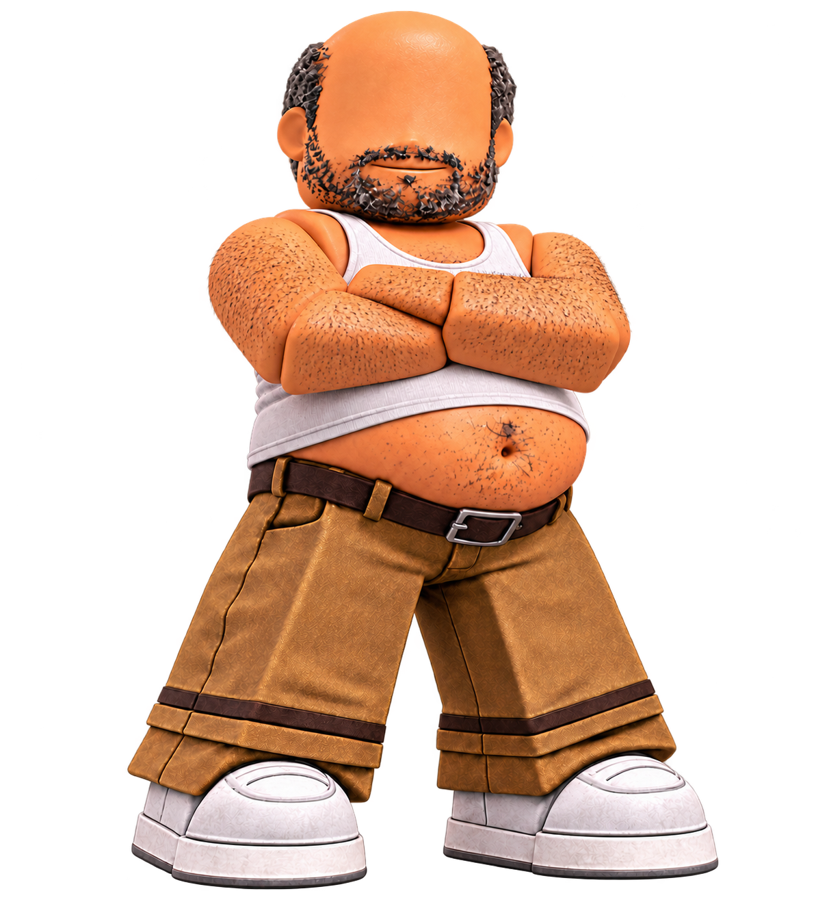
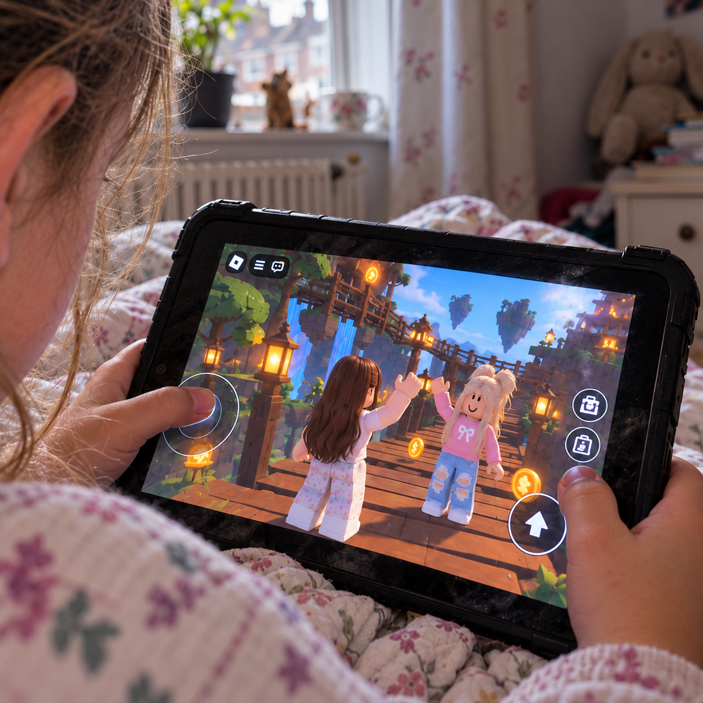

Lubach · Video
Lubach over Roblox
Lubach bespreekt de risico’s van Roblox voor kinderen.
Bekijk het item ↗Op Roblox speelt je kind samen met anderen. Wie er achter hun avatars zitten, weet je niet altijd. Een gesprek kan uitlopen op verzoeken om intieme beelden of op chantage. Waar kun je als ouder op letten?
De onzichtbare kant van Roblox ↓
Wie vraagt om privébeelden? Wie wil dat een gesprek geheim blijft? Deze fictieve personages laten zien hoe iemand je kind onder druk kan zetten.
Ik dwing je jezelf pijn te doen en laat je het filmen.
Deze personages en accountnamen zijn verzonnen. Let op wat iemand vraagt en doet; aan een avatar zie je niet wie erachter zit.
Wat gebeurt er online?
Grooming en sextortion betekenen niet hetzelfde. Bij grooming zoekt iemand contact met seksueel misbruik als doel. Bij sextortion dreigt iemand intieme beelden te verspreiden. Ook misleiding en bedreiging kunnen een rol spelen.
De begrippen hieronder kunnen elkaar overlappen.

Bij grooming zoekt iemand contact met een kind met seksueel misbruik als doel. Diegene probeert bijvoorbeeld het vertrouwen te winnen en kan zich voordoen als een leeftijdgenoot. Het misbruik kan online gebeuren of na een ontmoeting.
Bron: Nederlands Jeugdinstituut — online seksueel misbruik ↗
Iemand dreigt een naaktfoto of seksueel filmpje te delen en eist geld, nieuwe beelden of seksuele handelingen. Dat heet sextortion. Betaal niet en stuur geen nieuwe beelden. Vraag hulp bij Offlimits of de politie. De schuld ligt bij de chanteur.
Bron: Offlimits — sextortion ↗
Een nepprofiel, een gestolen foto, een verzonnen verhaal: iemand doet zich voor als een ander om contact te leggen en vertrouwen te winnen. Dat heet catfishing. Alleen een fantasie-avatar gebruiken valt daar niet onder.
Iemand zoekt je adres of telefoonnummer op, of verspreidt die gegevens om je bang te maken of lastig te vallen. Dat heet doxing. Een vraag naar je woonplaats is op zichzelf nog geen doxing.
Iemand eist dat je kind gesprekken geheimhoudt, het contact met anderen verbreekt of opdrachten uitvoert. Zo kan die persoon steeds meer controle krijgen. ‘Online dwang’ is hier een beschrijving van gedrag.
In ernstige gevallen worden kinderen gedwongen zichzelf te verwonden. Politie en OM beschrijven zulke dwang bij netwerken als 764/The Com. Niet ieder geval van online dwang heeft met die netwerken te maken.
Bronnen: NJi — macht en controle bij misbruik ↗ · Politie/OM — 764/The Com, 23 juli 2026 ↗
Lubach bespreekt de risico’s van Roblox voor kinderen.
Bekijk het item ↗
NRC Vandaag over geld uitgeven op Roblox en hoe kinderen daartoe worden verleid.
Luister naar de aflevering ↗Thuis begint het gesprek
Vraag je kind om Roblox te laten zien. Wat speel je? Met wie? En waar praten jullie over?
HackShield over veilig gamen ↗Hulp bij online misbruik
Wordt je kind bedreigd of onder druk gezet? Je hoeft niet eerst precies te weten wat er is gebeurd om hulp te vragen.
Laat je kind vertellen en probeer rustig te blijven. Zeg dat je blij bent dat het naar je toe komt. Wat er ook is gebeurd: misbruik is niet de schuld van je kind. Bespreek samen welke hulp nodig is.
Noteer accountnamen, links en tijdstippen. Bewaar dreigberichten, maar stuur intieme beelden niet door. Vraag Offlimits of de politie hoe je bewijs veilig bewaart en wanneer je het account kunt melden en blokkeren.
Neem contact op met Offlimits bij online misbruik. Wordt je kind gechanteerd? Betaal niet en stuur geen nieuwe beelden. De politie kan uitleggen hoe je een melding of aangifte doet.
Direct gevaar? Bel 112.
Geen spoed, wel politie: 0900-8844. Politie ↗
Wie speelt er met je kind? laat zien hoe online contact kan omslaan in misbruik. Ken je een ouder voor wie dit nuttig is? Deel de website via WhatsApp.
Deel via WhatsApp →Een initiatief van Tosti Creative. Voor de uitleg gebruiken we openbare informatie van het Nederlands Jeugdinstituut, Offlimits, HackShield en de politie. De links staan bij de teksten. De verwijzingen betekenen niet dat deze organisaties de campagne onderschrijven.
Tekst en bronnen bijgewerkt op . Een externe deskundige heeft deze versie nog niet beoordeeld. De informatie is algemeen. Voor advies over jouw situatie kun je terecht bij de genoemde hulporganisaties.
Klopt er iets niet? Laat het Tosti Creative weten ↗